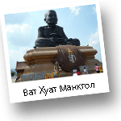
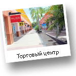

Обзорная Хуа Хин, Ча-Ам
Хуа Хин – старейший морской курорт в Таиланде. Во время обзорной экскурсии Вашему вниманию будут представлены, как современные места в городе, так и удивительные исторические объекты, которые на сегодняшний день являются, своего рода, памятниками архитектуры города, а также его визитной карточкой. Вы узнаете массу полезной информации о... читать далее

Обзорная Хуа Хин и Ват Хуат Монкгол
В храме Ват Хуат Монгкол Вы увидите огромную статую черного монаха, построенную в честь самого почитаемого тайцами монаха Луанг По Тхота, которая возвышается на пьедестале в центре храма. Вдоволь насладившись архитектурными достопримечательностями, Вы отправитесь на... читать далее
Виноградники и Ват Хуат Монкгол
Виноделие в Таиланде – достаточно молодая отрасль. Около 15 лет назад на территории Таиланда опровергли мнение, что виноград невозможно выращивать на широте и долготе, где находится Королевство. На сегодняшний день Таиланд является единственной страной Юго-Восточной Азии, где виноград выращивают и производят... читать далее
Водопады Пала-У и Виноградники
Удивительная по свое красоте экскурсия, которая позволит Вам получить массу положительных ощущений от близкого знакомства с природой Таиланда. Ваше путешествие начнется с посещения национального парка-заповедника "Каенг Крачан" в 70 км от Хуа хина на запад. "Каенг Крачан" является... читать далее

Водохранилище Каенг Крачанг
Природная экскурсия, посещение красивейшего озера "Каенг Крачан" в 70 км на запад от Хуахина. читать далее

Национальный парк Куйбури
Национальный парк Куйбури – красивейшей природный заповедник. Дикие слоны и буйволы ... читать далее
Храмы и дворцы Петчабури
Вашему вниманию предлагается путешествие в город Петчабури. Петчабури – город в Таиланде с самым большим количеством храмов на единицу площади. Петчабури является историческим городом, который был одним из главных центров государства в период Королевства Аюттхайя. Город находится в 60 км... читать далее

Храмы и дворцы Петчабури и Ча-Ама
В городе Ча-ам Вы посетите Летний дворец "Пхра Ратчанивеи Марукхатайван", построенный во время правления Короля Рамы VI. Дворец, расположенный на берегу моря представляет собой ансамбль веранд и закрытых помещений, а также длинных коридоров, которые соединяют между собой части дворца. Один из главных моментов, достойный Вашего внимания... читать далее
Удивительная провинция Прачуапкхирикхан
Предлагаем Вам уникальную экскурсию, которая сочетает в себе посещение культурно-исторических достопримечательностей и, в то же время, носит развлекательный характер, а также представляет прекрасную возможность получить массу положительных эмоций от отдыха на одном из самых удивительных по своей красоте на территории материка пляже... читать далее
Заповедник Сам Рой Йот
Заповедник "Сам Рой Йот" – красивейшее место. Название национального парка "Сам Рой Йот" переводится, как «триста горных пиков». Самая высокая вершина парка поднимается над уровнем моря на 605 метров. "Сам Рой Йот" занимает площадь в 60 кв. км. Во время экскурсии Вы совершите прогулку на небольшой традиционной лодке через мангровые заросли... читать далее
Плавучий рынок Дамнын Садуак и Сад роз
Отправляясь на эту увлекательную экскурсию Вы сможете посетить традиционный тайский плавучий рынок. Путешествие на рынок очень колоритное и отражает культуру плавучих рынков Юго-Восточной Азии. Плавучий рынок Дамнын Садуак (Damnoen Saduak) это самый старый и традиционный среди плавучих рынков. На этом рынке снимались кадры знаметитого художественного фильма «Опасный Бангкок»... читать далее
Сафари-парк Хуа Хин
Поездка в сафари-парк не оставит равнодушным ни взрослых ни детей. Прекрасная возможность весело провести время и развлечься. Сафари-парк расположен в южной части города Хуа Хин. Вашему вниманию будет представлена возможность покататься на слонах и покормить этих величественных животных. Вы увидите необыкновенные шоу-программы, в которых принимают участие змеи, крокодилы, слоны... читать далее

Шоппинг-тур и летучие мыши
Предлагаем Вашему вниманию посещение торгового центра открытого типа, где Вы сможете совершить покупки и приобрести подарки для родных и близких. На территории торгового центра представлена одежда, обувь, аксессуары, как для женщин, так и для мужчин. Также, имеются магазины детской одежды. После посещения торгового центра Вы отправитесь на созерцание необыкновенного зрелища. Из пещеры... читать далее

Красоты Хуа Хина - ЭКСКЛЮЗИВНО!!!
Предлагаем Вашему вниманию комбинированную экскурсионную программу на целый день. Это прекрасная возможность за один день увидеть очень многие достопримечательности, отдохнуть, совершить шоппинг и получить массу положительных эмоций.... читать далее
Путешествие для Всех!!!
Компания Navigating Thailand предлагает Вам отправиться в развлекательное путешествие всей семьей. Эта экскурсия уникальна тем, что Вы увидите места, которые не представлены в традиционных экускурсионных программах. Данная программа идеально подходит для путешествия всей семьей. Отправляясь в путешествие никто не будет скучать! Экскурсия составлена таким образом, чтобы и взрослые и дети нашли для себя массу впечатлений и получили максимум положительных эмоций... читать далее
-БАНГКОК-
Река КВАЙ
Захватывающее двухдневное путешествие в северо-западную часть страны, провинцию Канчанабури, где гармонично сочетаются экзотика и неповторимый национальный колорит. Отличительными особенностями данной программы являются: проживание в романтическом отеле-бутике повышенной комфортности, улучшенное питание и посещение заповедных мест в национальном парке Сайок... читать далее
Королевский Бангкок
Эта экскурсия очень понравится Всем, кому интересно познакомиться с историей, культурой и архитектурой Королевства. Вы посетите роскошные места Бангкока. Увидите архитектурные объекты необычайной красоты и значимости. Королевский дворец является резиденцией тайских Королей начиная с 18 века. Строительство дворца задумывалось... читать далее
Бангкок Мир Сафари
Поездка на экскурсию Мир Сафари не оставит равнодушным никого. Не далеко к юго-востоку от Бангкока под открытым небом расположился живописный парк с животными тропических широт. У Вас будет возможность увидеть различных экзотических животных и птиц. Проезжая по удивительно красивой территории парка на автомобиле... читать далее
Шоппинг-тур в Бангкок, океанариум
Эта поездка будет интересна тем, кто любит прогуляться по торговому центру. «Сиам Парагон» (Siam Paragon) является самым крупным торговым центром Юго-Восточной Азии. Вы сможете приобрести высокого качества одежду, обувь, аксессуары. Вашему вниманию представлены магзины известных и доргих брендов и одновременно более демократичные... читать далее
Академия гольфа
Хуа Хин считается Королевским гольф-курортом. Именно здесь для Вас открывается прекрасная возможность обучиться этой замечательной игре. Хуа Хин является любимым местом отдыха для элиты Бангкокского общества. Одной из достопримечательностей Хуа Хина стали соревнования по 18-ти луночному курсу гольфа... читать далее